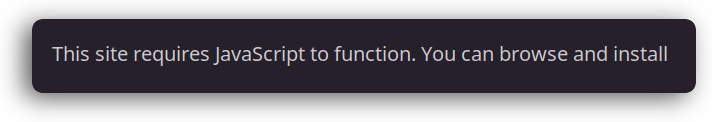

toward a more perfect browser
the smol web
When I browse the internet, I want it to be like reading a book. I really don't want a bunch of blinking and moving and crap floating hither and yon. I just want text and some images. I spend so much time in GNU Emacs that if the page doesn't render in eww I can't take it seriously. I hate having to open a browser just to get a bit of information. Mostly, I skip sites that don't render in eww. I am really that lazy. So lazy that I get fatigue from switching to another application just to wade through all the blinking bullshit.

This is the reason I don't use Melpa.org I tend to stick with Elpa. It is a site dedicated to packages for GNU Emacs and I can't access it with eww … I mean what is that all about? There are exceptions as always, you have to use github, you need email, you want to watch movies, etc., but for most there are acceptable work arounds and I try to avoid these as much as I can.
select a site
I have a fistful of little tweaks I have saved for making eww do what I want. One of the things I want is to be able to switch back and forth between search engines. Sometimes I just want to Google, an answer… any answer, but sometimes I know what kind of answer I need and the site that might best provide it. Why not get it from the horse?
explanation:
- `defcustom`: This creates a customizable variable `eww-search-engine-list`. Emacs users can customize this variable through the `customize` interface, adding or removing search engines as they wish.
- List of Cons Cells: Each search engine is represented as a cons cell, with the car (first element) being the search engine's name (a string) and the cdr (second element) being the search engine's URL prefix (also a string).
- `:type` and `:group`: These keywords specify the type of the variable (an association list where both keys and values are strings) and the customization group it belongs to, respectively. Here, it's grouped under 'eww' for relevance, but you can choose a different group or create a new one if you're organizing custom settings for a specific setup.
using this variable:
To use `eww-search-engine-list` in conjunction with the `set-eww-prefix` function you want to create, you can modify `set-eww-prefix` to let the user select a search engine by name, and then automatically set the `eww-search-prefix` based on their selection. Here's an adjusted version of `set-eww-prefix` to use `eww-search-engine-list`:
how the eww-select-prefix function works:
- It first creates a list of engine names from `eww-search-engine-list` using `mapcar` to extract the `car` of each cons cell.
- It then prompts the user to select an engine name using `completing-read`, which provides completion for available search engines.
- Once the user selects a name, it finds the corresponding URL prefix using `assoc` to look up the name in `eww-search-engine-list`.
- Finally, it sets `eww-search-prefix` to the selected URL prefix and informs the user with a message.
This approach gives you a flexible and user-friendly way to switch between search engines in "eww", aligning with the customizability ethos of Emacs.
(defcustom eww-search-engine-list '(("Google" . "https://www.google.com/search?q=") ("DuckDuckGo" . "https://duckduckgo.com/?q=") ("Wikipedia" . "https://en.wikipedia.org/wiki/Special:Search?search=") ("Stack Overflow" . "https://stackoverflow.com/search?q=")) "A list of search engine names and their URL prefixes." :type '(alist :key-type string :value-type string) :group 'eww) (defun eww-set-eww-prefix (search-prefix) "Set EWW's search engine prefix to SEARCH-PREFIX." (interactive "sEnter search engine prefix: ") (setq eww-search-prefix search-prefix) (message "EWW search prefix set to: %s" search-prefix)) (defun eww-select-eww-prefix () "Set EWW's search engine prefix by selecting from a predefined list." (interactive) (let* ((engine-names (mapcar 'car eww-search-engine-list)) (selected-name (completing-read "Choose search engine: " engine-names)) (selected-prefix (cdr (assoc selected-name eww-search-engine-list)))) (setq eww-search-prefix selected-prefix) (message "EWW search prefix set to: %s" selected-prefix))) (global-set-key (kbd "C-c e") #'eww-select-eww-prefix)
nothing special
But that is the great thing about GNU Emacs, a few nothing specials strapped together make your life much more enjoyable. You can make it as complex or as simple as you like.
some further tweaks
As I said this is nothing special even tho I use it daily. But there are a few things I want to add:
[X]this should be anewwentry point[ ]should really validate the url
(defun eww-select-eww-prefix () "Set EWW's search engine prefix by selecting from a predefined list." (interactive) (let* ((engine-names (mapcar 'car eww-search-engine-list)) (selected-name (completing-read "Choose search engine: " engine-names)) (selected-prefix (cdr (assoc selected-name eww-search-engine-list)))) (setq eww-search-prefix selected-prefix) (eww (read-regexp (format "%s" eww-search-prefix) '()))))